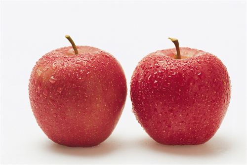

很多患有腋臭的患者内心都是十分煎熬的，因为他们身上难闻的气味使得周围人对他们都避之不及，更没有人愿意与他们交流，那么，去除腋臭的偏方都有哪些呢?我们就跟随专家一起来看一看吧。
1、用干净的生姜切片外擦，每日2次，每次在双腋窝擦约5分钟。
2、山药治狐臭：将新鲜山药切片搓擦腋下，每日1～2次，可治狐臭。
3、将食盐炒热后，装入纱布袋内，趁热扎好，反复摩擦双腋窝约5分钟，每日1次，连用5天。
4、胡椒、花椒各50粒，研成粉，再加入冰片2钱，用医用酒精调匀，每日取一小团涂患处并用胶布贴好，一日换一次，连用半月可根除。
5、辣椒2-3个，切成小段，放入瓶内，加2%-2.5%碘酊10ml，密封摇荡。3日后用棉球蘸药液，涂擦腋窝，每日1-3次。一般连用7天可愈。

6、滑石、三仙丹、紫花地丁治狐臭：将25克滑石、2克三仙丹、1克紫花地丁一同研成细末，搽于腋滑石陈石灰治狐臭丽取滑石、陈石灰各30克，研成粉末，外敷腋下，每日1次，常用可治愈狐臭。
上面这些就是专家给出的去除腋臭的一些偏方，这些方法让很多患有此病的患者都脱离了苦海，恢复了健康的生活，所以，有这方面困扰的患者在日常生活中可以试一试，一定会有不一样的收获的。